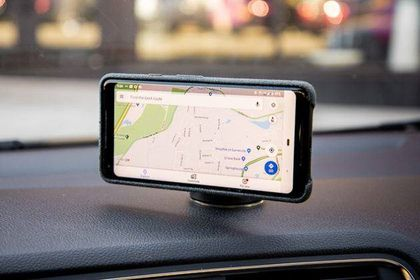

Our app will encourage you to walk more!
We will do this by:
Notify you when your destination is within walking distance.
distance can be changed to your
liking.
You'll gain points every km walked!
points can be exchanged into coupons and such!
Will be available to both Android and Apple devices

How we do this:
We'll use Google Maps to map out and show you the walking distance around your position,
and where the best route is for you to walk! The app will notify you when the distance to your destination
is walkable.
The choice is yours!